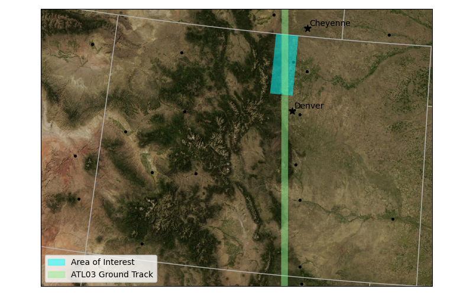

# Harmony services
from harmony import BBox, Client, Collection, Request, LinkType, CapabilitiesRequest
# Earthdata Login Authentication
import earthaccess
# Load the data
import xarray as xr
import netrc
import json
import datetime as dt
import s3fs
from IPython.display import display, JSONSubsetting ICESat-2 Data Using NASA Harmony
Summary
In this tutorial, we will use NASA’s Earthdata Harmony Services to subset and access data using the harmony-py Python library. We will subset the ATL03 Global Geolocated Photon Data product from the ICESat-2 mission as an example. Please see Demonstration for working with TEMPO data via Harmony-py as a complimentary tutorial highlighting Harmony services for the TEMPO mission.
What is Harmony? Harmony is a service that allows you to customize many NASA datasets, including the ability to subset, reproject and reformat files. Data can be subsetted for a geographic region, a temporal range and by variable. Data can be “reprojected” from its native coordinate reference system (CRS) to the coordinate reference system relevant to your analysis. And data can be reformatted from its native file format to a format that is more relevant for your application. These services are collectively called transformation services. However, not all services are available for all datasets. You will learn how to discover which services are available for a given dataset.
Data transformed by Harmony services are staged on NASA Amazon Web Services (AWS) S3 buckets or on user-owned AWS S3 buckets. Data in NASA S3 buckets are accessed using signed URLs or temporary access credentials. This data can be downloaded to your local machine or you can access the data directly if you are working in an AWS cloud instance, such as a Jupyter Hub, in AWS us-west-2.
Learning Objectives
In this tutorial you will learn how to:
- discover Harmony service options for a given dataset;
- use the
harmony-pylibrary to subset ATL03 granules for a bounding box and time range; - download the subsetted ATL03 to your local machine;
- load the subsetted ATL03 data directly into xarray.
Prerequisites
This tutorial has been designed to run in an AWS cloud compute instance in AWS region us-west-2. However, if you want run it from your laptop or workstation, everything except Step-4, direct access, should work just fine.
An Earthdata Login account is required to access data from the NASA Earthdata system. Before requesting a subset of ICESat-2 data, we first need to set up our Earthdata Login authentication, shown below.
Tutorial
Step 1: import required packages
We’ll be using earthaccess, harmony-py and xarray, along with some Python standard libraries.
Step 2: start a Harmony client
A Harmony Client is the interface to Harmony services and is used to submit requests and retrieve the results of those requests. We only need to start the client once. That client can then be used to discover what options are available for a dataset, request subsetting, check on the status of that request and retrieve the results.
We need to supply our Earthdata Login credentials to use Harmony services. hamony.Client will use EDL_USERNAME & EDL_PASSWORD environment variables or the credentials in our .netrc file, if one is available. If we don’t have either of these set up, we can enter our credentials directly.
harmony_client = Client(auth=('edl_username','edl_password'))If you don’t have environment variables or a .netrc file setup, replace the command in the following code cell with the one above, and use your actual username and password.
harmony_client = Client()Step 3: discover service options for a given dataset
The first thing we want to know is what service options Harmony has for the ICESat-2 dataset. We discover service options for a dataset by submitting a CapabilitiesRequest.
A CapabilitiesRequest takes a single argument that is either the Collection ID (also known as the Concept ID) or the Short Name for the dataset. A Concept ID is a unique identifier for a dataset. For ATL03 Version 6, it is C2596864127-NSIDC_CPRD. For ICESat-2 products, the Short Name is the familiar product name starting with ATL; e.g. ATL03.
Submitting requests to Harmony will follow the same pattern, whether we are discovering capabilities or subsetting data. We first create a request and then submit that request.
short_name = "ATL03"
capabilities_request = CapabilitiesRequest(short_name=short_name)We then submit the request using the request method of the Harmony client.
capabilities = harmony_client.submit(capabilities_request)The result is returned as a JSON string. This string is human readable text but the format makes it hard to read the contents. We can use the json library to decode the string and print it in a more reader-friendly format.
The JSON returned by capabilities can be very long if variable subsetting is an option and data files contains lots of variables. However, information about subsetting service options should be in the first few lines of output.
JSON(capabilities)<IPython.core.display.JSON object>The JSON response contains a list of transformation options available for each dataset: marked as true if available and false if not. A list of Harmony service endpoints and capabilities associated with the transformation options. And a list of variables in the dataset if variable subsetting is available.
For ATL03, you can see that only subsetting bounding box (bboxSubset) and subsetting by Shapefile (shapeSubset) are marked true. Variable subsetting (variableSubset), concatenation (concatenate) and reprojection (reproject) are all false. Bounding box and Shapefile subsetting, as well as temporal subsetting, are performed by the Trajectory Subsetter. This subsetting routine outputs an HDF5 file.
Step 4: subset data
Now that we know what subsetting options are available for the ATL03 dataset, we can request a subsetted dataset.
Create A Subset Request
we will create a simple request for subset of ATL03 for a bounding box over the northern Colorado Front Range and for the 2020-04-27 to 2020-05-28 period.

The spatial extent to subset is passed as a BBox object that defines the minimum longitude, minimum latitude, maximum longitude and maximum latitude in decimal degrees.
The temporal range to subset is passed to Harmony as a dictionary with "start" and "stop" keys, and dates supplied as datetime objects.
Currently, ICESat-2 data only allows spatial and temporal subsetting so we only demonstrate these capabilities. For further information on constructing a Request objects see the harmony-py documentation.
request = Request(
collection = Collection(id=capabilities["conceptId"]),
spatial=BBox(-105.5,40,-105,41.),
temporal={
'start': dt.datetime(2020, 4, 27),
'stop': dt.datetime(2020, 5, 28)
}
)Submit the request
The request is submitted in the same way as the Capabilities request. This starts the subsetting process, which may take a while depending on the size of the request. Submitting the request returns a Job ID, which is a unique identifier for your request that is used to track the progress of the request and to access the results.
If the request involves a lot of files (more than 300), Harmony will only process the first 300 files. See section below on Handling Large Jobs on how to work around this restriction.
job_id = harmony_client.submit(request)
job_id'4e07cf87-d846-4f59-8ea0-d1c52477b377'Step 5: check the status of the request
Subsetting is performed in the cloud. For small jobs, the subsetting process can be monitored with a progress bar by submitting the job_id to the wait_for_processing method of the Harmony client.
harmony_client.wait_for_processing(job_id, show_progress=True) [ Processing: 100% ] |###################################################| [|]Once the subsetting has finished, information about the job can be accessed as a JSON file
job_summary = harmony_client.result_json(job_id)
JSON(job_summary)<IPython.core.display.JSON object>Step 6: access the subsetted data
The subsetted files can be accessed by downloading the files to a local machine, such as a laptop or desktop workstation, or by streaming the data. We will use both access methods in the two examples below.
Results are staged for 30 days in the Harmony s3 bucket.
Download a single file
The download method takes a url to a single subsetted file. The directory keyword is used to specify a download path. The default is the current working directory (.). Setting overwrite to False avoids downloading the same file twice. If you need to download the file again, then set overwrite=True.
The download and download_all method are asynchronous, so that downloading each file is performed independently. Once the downloads are completed, the filepaths for the downloaded file are accessed using the result method.
url = list(harmony_client.result_urls(job_id))[0] # Get the data url of the first file
filepath = harmony_client.download(url, directory=".", overwrite=False).result()
filepath'./ATL03_20200427193622_04930702_006_02_subsetted.h5'Download all files
The download_all method can use the job-id or the result-json, which contains result urls.
As with download, the download directory path on the local machine can be specified with the directory keyword. To save downloading the same file, the overwrite keyword can be set to False.
The paths fo the files are returned as a list.
futures = harmony_client.download_all(job_id, directory=".", overwrite=False)
filelist = [f.result() for f in futures] # get filepaths
len(filelist)1In this case, there is only one file download. Individual filepaths can be accessed using the normal methods for Python lists.
filelist[0]'./ATL03_20200427193622_04930702_006_02_subsetted.h5'Load a file into an xarray dataset
The simplest way to load ICESat-2 data is to use xarray.
You could also load the data into a geopandas.GeoDataframe
ds = xr.open_dataset(filelist[0], group="gt1l/heights")
ds<xarray.Dataset> Size: 92MB
Dimensions: (delta_time: 1848992, ds_surf_type: 5)
Coordinates:
* delta_time (delta_time) datetime64[ns] 15MB 2020-04-27T19:39:45.8497...
lat_ph (delta_time) float64 15MB ...
lon_ph (delta_time) float64 15MB ...
Dimensions without coordinates: ds_surf_type
Data variables:
dist_ph_across (delta_time) float32 7MB ...
dist_ph_along (delta_time) float32 7MB ...
h_ph (delta_time) float32 7MB ...
pce_mframe_cnt (delta_time) uint32 7MB ...
ph_id_channel (delta_time) uint8 2MB ...
ph_id_count (delta_time) uint8 2MB ...
ph_id_pulse (delta_time) uint8 2MB ...
quality_ph (delta_time) int8 2MB ...
signal_conf_ph (delta_time, ds_surf_type) int8 9MB ...
weight_ph (delta_time) uint8 2MB ...
Attributes:
Description: Contains arrays of the parameters for each received photon.
data_rate: Data are stored at the photon detection rate.Direct S3 Access of Harmony Results
If you are working in the AWS us-west-2 region (the same region as NASA Earthdata Cloud) you can stream the data using direct S3 access.
You must be running this notebook in the AWS us-west-2 region to run the following code cells.
We need to get the url for the data in the S3 bucket. We can do this using result_urls, as we did for download but we set link_type=LinkType.s3 to specify we want the S3 url.
urls = list(harmony_client.result_urls(job_id, link_type=LinkType.s3)) # result_urls returns a generator possible issue to return list
urls['s3://harmony-prod-staging/public/4e07cf87-d846-4f59-8ea0-d1c52477b377/80698796/ATL03_20200427193622_04930702_006_02_subsetted.h5']We need AWS credentials to access the S3 bucket with the results. These are returned using the aws_credentials method.
creds = harmony_client.aws_credentials()We then create a virtual file system that allows us to access the S3 bucket. We pass the credentials to authenticate.
s3_fs = s3fs.S3FileSystem(
key=creds['aws_access_key_id'],
secret=creds['aws_secret_access_key'],
token=creds['aws_session_token'],
client_kwargs={'region_name':'us-west-2'},
)We then open the S3 url as a file-like object.
A file-like object is just what it sounds like, an object - a collection of bytes in memory - that is recognized as a file by applications.
f = [s3_fs.open(url, mode='rb') for url in urls]We can then open one of the files using xarray.
ds = xr.open_dataset(f[0], group='gt1l/heights')
ds<xarray.Dataset> Size: 92MB
Dimensions: (delta_time: 1848993, ds_surf_type: 5)
Coordinates:
* delta_time (delta_time) datetime64[ns] 15MB 2020-04-27T19:39:45.8497...
lat_ph (delta_time) float64 15MB ...
lon_ph (delta_time) float64 15MB ...
Dimensions without coordinates: ds_surf_type
Data variables:
dist_ph_across (delta_time) float32 7MB ...
dist_ph_along (delta_time) float32 7MB ...
h_ph (delta_time) float32 7MB ...
pce_mframe_cnt (delta_time) uint32 7MB ...
ph_id_channel (delta_time) uint8 2MB ...
ph_id_count (delta_time) uint8 2MB ...
ph_id_pulse (delta_time) uint8 2MB ...
quality_ph (delta_time) int8 2MB ...
signal_conf_ph (delta_time, ds_surf_type) int8 9MB ...
weight_ph (delta_time) uint8 2MB ...
Attributes:
Description: Contains arrays of the parameters for each received photon.
data_rate: Data are stored at the photon detection rate.Appendices
A. Handling large requests
By default Harmony will only process first 300 granules for large requests. This allows users to check that results look correct. Once we are satified that our request is correct, the job can be resumed. See this notebook for examples.
B. Translating requests
harmony-py is an interface to the Harmony RESTful API. RESTful API send requests and receive responses via HTTPS; the same protocol that serves web pages. Requests are sent to service endpoints, which is a URL (e.g. https://service.endpoint.com/type_of_service). Query parameters that modify a request can be appended a key-value pairs after a ?. Each key-value pair is separated by an &. For example:
https://service.endpoint.com/type_of_service?param1=value1¶m2=value2This url could be entered into a web browser.
The Harmony client has a request_as_url method that returns the request created by CapabilitiesRequest or Request
harmony_client.request_as_url(capabilities_request)'https://harmony.uat.earthdata.nasa.gov/capabilities?shortname=ATL03'harmony_client.request_as_url(request)'https://harmony.uat.earthdata.nasa.gov/C1256407609-NSIDC_CUAT/ogc-api-coverages/1.0.0/collections/parameter_vars/coverage/rangeset?forceAsync=true&subset=lat%2840%3A41.0%29&subset=lon%28-105.5%3A-105%29&subset=time%28%222020-04-27T00%3A00%3A00%22%3A%222020-05-28T00%3A00%3A00%22%29&variable=all'Try pasting the URL in the output cell below into a web browser to see the response.
Harmony requests can also be sent with curl, a library and command line tool for transfering data using various network protocols, including HTTPS. The request_as_curl method can be used to generate a curl command. This can be helpful if you want to automate a process outside of a Jupyter Notebook or for testing requests.
harmony_client.request_as_curl(capabilities_request)"curl -X GET -H 'Accept: */*' -H 'Accept-Encoding: gzip, deflate, br' -H 'Authorization: *****' -H 'Connection: keep-alive' -H 'Cookie: uat_urs_user_already_logged=yes; state=s%3A7893b9a533c0a171525bc82a3693d9b5.XXQF2YV1GMxMt5SI%2BEQy05yxJC8KLMzUQRbpfAi1MqY; token=*****; _urs_uat-gui_session=fb95333993ef92e65ff1fe8efd4e7449' -H 'User-Agent: CPython/3.10.14 Linux/5.10.224-212.876.amzn2.x86_64 harmony-py/0.5.0 python-requests/2.32.3' 'https://harmony.uat.earthdata.nasa.gov/capabilities?shortname=ATL03'"harmony_client.request_as_curl(request)'curl -X POST -H \'Accept: */*\' -H \'Accept-Encoding: gzip, deflate, br\' -H \'Authorization: *****\' -H \'Connection: keep-alive\' -H \'Content-Length: 563\' -H \'Content-Type: multipart/form-data; boundary=fa4d368a0e27040358124f0e030b456b\' -H \'Cookie: uat_urs_user_already_logged=yes; state=s%3A7893b9a533c0a171525bc82a3693d9b5.XXQF2YV1GMxMt5SI%2BEQy05yxJC8KLMzUQRbpfAi1MqY; token=*****; _urs_uat-gui_session=fb95333993ef92e65ff1fe8efd4e7449\' -H \'User-Agent: CPython/3.10.14 Linux/5.10.224-212.876.amzn2.x86_64 harmony-py/0.5.0 python-requests/2.32.3\' -d \'--fa4d368a0e27040358124f0e030b456b\r\nContent-Disposition: form-data; name="forceAsync"\r\n\r\ntrue\r\n--fa4d368a0e27040358124f0e030b456b\r\nContent-Disposition: form-data; name="subset"\r\n\r\nlat(40:41.0)\r\n--fa4d368a0e27040358124f0e030b456b\r\nContent-Disposition: form-data; name="subset"\r\n\r\nlon(-105.5:-105)\r\n--fa4d368a0e27040358124f0e030b456b\r\nContent-Disposition: form-data; name="subset"\r\n\r\ntime("2020-04-27T00:00:00":"2020-05-28T00:00:00")\r\n--fa4d368a0e27040358124f0e030b456b\r\nContent-Disposition: form-data; name="variable"\r\n\r\nall\r\n--fa4d368a0e27040358124f0e030b456b--\r\n\' https://harmony.uat.earthdata.nasa.gov/C1256407609-NSIDC_CUAT/ogc-api-coverages/1.0.0/collections/parameter_vars/coverage/rangeset'